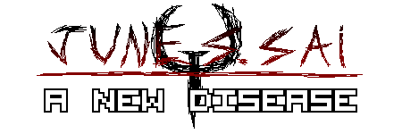

Posted on August 7, 2022, 19:22
Last updated on August 8, 2022, 11:00

(Click the image to see it in full size)
Holy shit... how far we've come, haven't we?
From having barely to no understanding of making a website and barely any content to back it up
To having a fully fledged, polished website with even it's own domain
At times I tend to forget the time flies when you're not looking.
It's been about 4 months since this website went up
A lot happened since then, a lot of good, and a lot of bad, and a lot of lessons have been learned
both when it comes to making this site and life in general, and instead of making a rant on how
I hate people and myself in here again, I'll talk about something more fun and that I'm actually
very interested in talking about, so let's sit down and take a look on how so much chan change
in so little time.
(Click the image to see it in full size)
I've always been interested on making my own website ever since I was little, I'd look around websites
like the Mystical Forest Zone and I'd be amazed on how those websites looked back in the day, and even
after so many years, they still cross through my head from time to time because of the nostalgia I have
for everything made around that era, because everything had this slick artstyle, it felt incredibly
modern and digital, and everything, from buttons, to site layout, it almost felt like a door into
the future, and things looked great
Until it didn't when Web 2.0 came around and everything started to fall apart
If you want to know more about my distaste for Web 2.0 and most of the things that sprouted along
with it, my other blog post I made about it explains everything, but all
you need to know now, is that what was supposed to be a fun new era for the internet, turned into
everyone trying to make things purely based on profit and attention, instead of making it just for
the fun of it or because they had a passion for it, everything had to be professional or have some
sort of profitability behind it, and this absolutely killed a lot of the more amateur content that
I and others used to create and consume, and in my opinion, the more amateur content had a lot of
soul behind it, and the fact it was mostly gone since you didn't had the chance to compete with
the bigger media unless you somehow managed to make yourself look "professional" means that a lot
lost their incentive to create content, and fun sites, like the ones where you'd hop in to read
some guy talk about DooM and download WADs and sprites were suddenly gone, and what we had in the
place of those were dull, boring, souless sites that strived to be as awful and lazy as they
possibly get away with, and I always hated this, one of the biggest offenders being YouTube
to the point they even removed the whole thing in which you could customize the HTML and CSS
of your channel, ROBLOX is up there too, if not worse, but that's a whole other can of worms
I'm sincerely not ready to talk about yet.
Still, this era of the web has been incredibly miserable, while the first era was incredibly
optimistic, this era is incredibly pessimistic and nihilist by comparision, and this might
might sound incredibly ironic coming from me, but I hate it.
I know I've hammered this point down like, five times already, but I can't put enough
emphasis on people don't make content for fun anymore, it's either for profit or because
they want to complain about some stupid fucking drama over a guy that said the N word
I liked when people complaining about stuff was over superficial shit like how the newest
Sonic game sucks, or how SuperMarioLogan is not funny on some random DooM forum, but this
kind of stuff is long gone, and I always wanted to bring it back, but changing the world
all by yourself, no matter how small that world might be, is very fucking hard
But I could still make some sort of change, even if there's no one else there to see it
Luckily, I've met a lot of great friends that absolutely changed things for me
and one of them helped me spark my interest on those things again, enough for me to
actually bother to learn it for good this time

(Click the image to see it in full size)
Octo's old website was extremely simple all things considered, but I still loved that
website just because of it's design and intent
It was just a website Octo made probably in a few days with a website template he grabbed
somewhere around the internet, but it instantly reminded of when I'd hop into some older
websites to download DooM mods or just check the crazy shit people would post on a daily
basis on some crazy website I found linked on a YouTube description, and Octo's site
became one of the sites I'd come to visit on a daily basis besides Newgrounds and YouTube
just because of how much I enjoyed the novelty of it, but the design wasn't the only thing
that kept me coming back...
It was the amount of weird things Octo did with his little website
He would make dumb new features and sections like the infamous gay list, and he'd even
leave little secrets and eastereggs hidden through his website and the sourcecode for
me to find it, and seeing Octo updating his website with new content always excited me
I never knew what was going to happen or what I was going to find next, and although
most of it was just a silly inside-joke within the code, I still really liked it
And that got me thinking...
"Man, now I really want to make my own website, how hard could it be?"
And the thought stuck in my head for a while, and when I realised that pretty much
everyone else around me was learning HTML and CSS, or just coding in general, I didn't
want to stay behind, and that gave me enough incentive for me to finally learn how to
use HTML and CSS to build my own website from the ground up, since I didn't want to use
things like Wix to make my website, since I always felt they'd never allow me to put the
personality I wanted into my website, so I asked around for a few sites that could help
me learning it, and I start messing around with things, just calling a few friends for
help here and there whenever the answer wasn't exactly obvious
(Click the image to see it in full size)
And that for the night and the next day I worked on the site nonstop, with the help of
a few sites, a few friends, a lot of experimentation, I've essentially learned how to
use HTML and CSS overnight (which I'm very proud of despite how basic it is btw), and
the site was up and running, at the time, I didn't know what I wanted for it and for
it's future, but I knew one thing for sure; I wanted it, and everything in the site
to have a personal touch, I wanted everyone that stumbled upon this website to be
like "Oh, that's June!" even if they were just scrolling by, and I wanted things
to feel meaningful, I wanted people to get into this website and think about it years
later in the future and go; "Oh yeah, that website was pretty cool!" just like me
I wanted it to be special, both for me and to whoever stumbled upon it
Everything I would do with or for this website would have to be something I'm actually
interested or passionate about, no half-assing, no laziness, I wanted to make so
things would feel interesting and personal, even if no one else gave a shit about it
I would, and that's the rule I live by; I do the things in here mainly for myself
entertaining someone else is just a satisfying conclusion to an already rewarding "job"
There has been countless times in which I've scrapped essentially finished pages, because
I simply didn't feel the passion through them, they might be good for a read, but if it
wasn't for me, I wouldn't want it here, I wanted something I'd be proud to look at even
after the fact, something I'd look back even after months and still be proud of it, because
I'd be able to tell that a lot of effort and love went into it, and I want everyone else to
feel the same, to see something in here, and hopefully, whatever they see in here, isn't
gone of their heads in the next day, it sticks around, and that you'd maybe leave this place
knowing more than you did before you got in, and in many ways, this is also the reason why it
takes so long for new posts and updates to come out, if they're not substantial, I don't see
why they should be in here, everything has to be meaningful, even if that meaning is subtle
And the design of the site is also inheritely linked with this philosophy aswell
In my head, at least someone out there has accessed this website for the first time and went
"Holy shit, this is mega awesome!" because it either reminded them of Web 1.0, when DooM sites
were the hot shit, or because they felt that whatever they're looking at, has personality and
soul behind it, and if by any means this is the case, then my job was well done
I've explained this countless times, but this site was born both for my love of old websites
from when I started to use the internet, and my disdain on how boring and souless everything has
become nowadays, I've built the site and the content in it with love, but I'm proving my point
that everyone else is opting to be lazy and uninspired out of spite, to prove that it didn't need
to be like that, we could still have cool looking things, we could still make things for fun
just making things based if you can profit out of it will always be something I despise
A lot of people I know have asked me
"If you're not profiting of your website, why do you even have one to begin with?"
and this will always sadden me, no matter how many times I might have heard it
I'm not saying that you shouldn't profit out of your work, if you can find a way to win something
through your passion, I'd say you should go for it, but making profit should never be the sole
reason for you to do things or to sacrifice artistic value
I despise the modern mentality of things being utterly meaningless unless you can find a way to
earn money through it, even if it ends up ruining the whole spirit of the thing, and that's one
of the main things I also knew from the very beginning that I wanted for my website and all things
done by me in general; if I can find a way to earn something through the things I do, that's fine
but the things I do are first and foremost made for fun and out of passion, and I'll NEVER sacrifice
the merit of the fun and the care of my works in order to make some cash money here and there
There's no shame in doing things just for fun, even if people don't think the same
In general, there's a lot of things that I like that a lot of people, including my own friends think
are "cringe", but I don't see shame in liking them all, but that's honestly ok, everyone is cringe in
some way or another, but even when being cringe, people will respect passion, and if you have fun with
something, if you're passionate about it, eventually, people will feel the passion aswell
In general, this is the website's philosophy; passion
Passion for the things I like
Passion for the things I dislike
Passion for when I first started browsing the internet
Passion for learning new things
Passion for the friends and people I've met along the way that impacted
and are still impacting my life
Passion for all the things that make me the person I am today
either that's a thing to be proud of or not.
I've built this site with love and care, and even with all the troubles it has gone through
Including me being a disaster of a person, it changed and evolved with me, and it still continues to
even when I threw the towel here and there
But I don't think feeling down is any reason to be ashamed
I don't think it's bad to recognize your limits and maybe even give up here and there, however
I do see shame in not trying again, and that's what I've been doing
I've thrown the towel countless times, and I've come to get it back every time
Always saying it's the last time, but I'm always lying, and I always come back to try again
And I think this site in many ways is the culmination of all of these attempts
From a barebones website, to what I'd consider something truly refined and special
I was expecting it to be abandoned in a few weeks, but it's still up and going, with more things
to come, and looking back at when it first started, really makes me proud, because my efforts
paid off, and now, I have something truly incredible at my hands
I'll probably get burned out of it again, and I'll give up again, but I'll come back again
I always do.
It's only been 4 months, but I'm legitimately happy about everything accomplished in such
short amount of time, and there's more to come
For the few amount of people that still bother to read these or keep up with the website:
And to Octo; I told you I wouldn't abandon the site after a while
I just wish you could do the same for your websites, faggot!
But once again, I must go, I need to rest after
a whole day of doing absolutely nothing
but don't you worry, I'll (probably...?) be back very soon (Don't count on it.)
Until we meet again!
